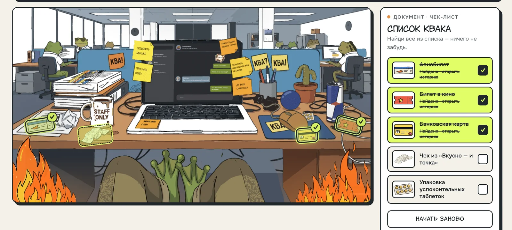
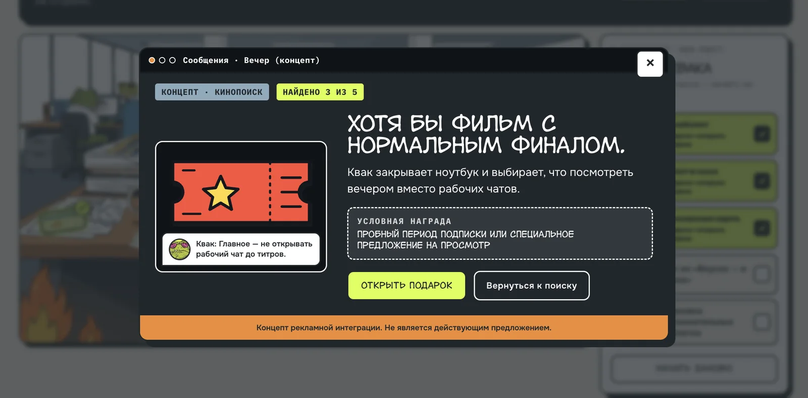
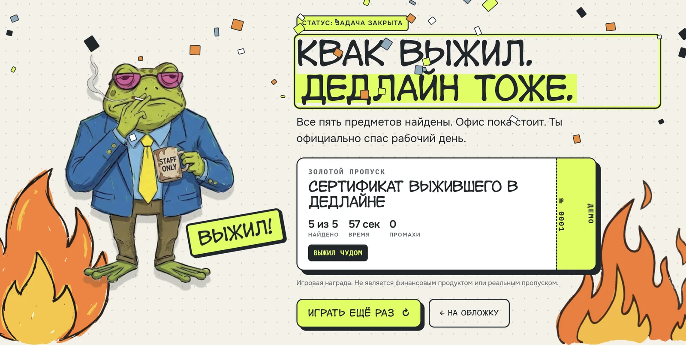
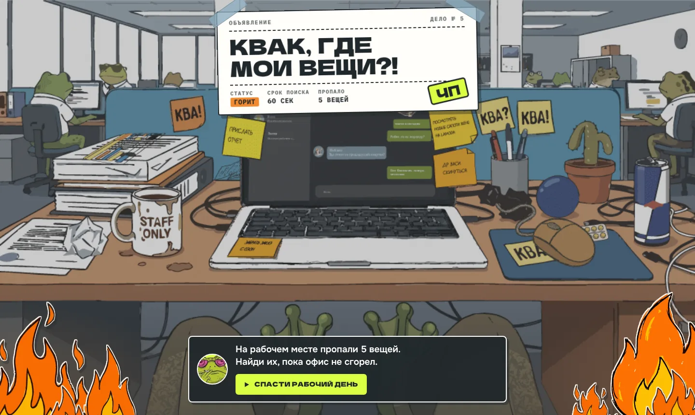
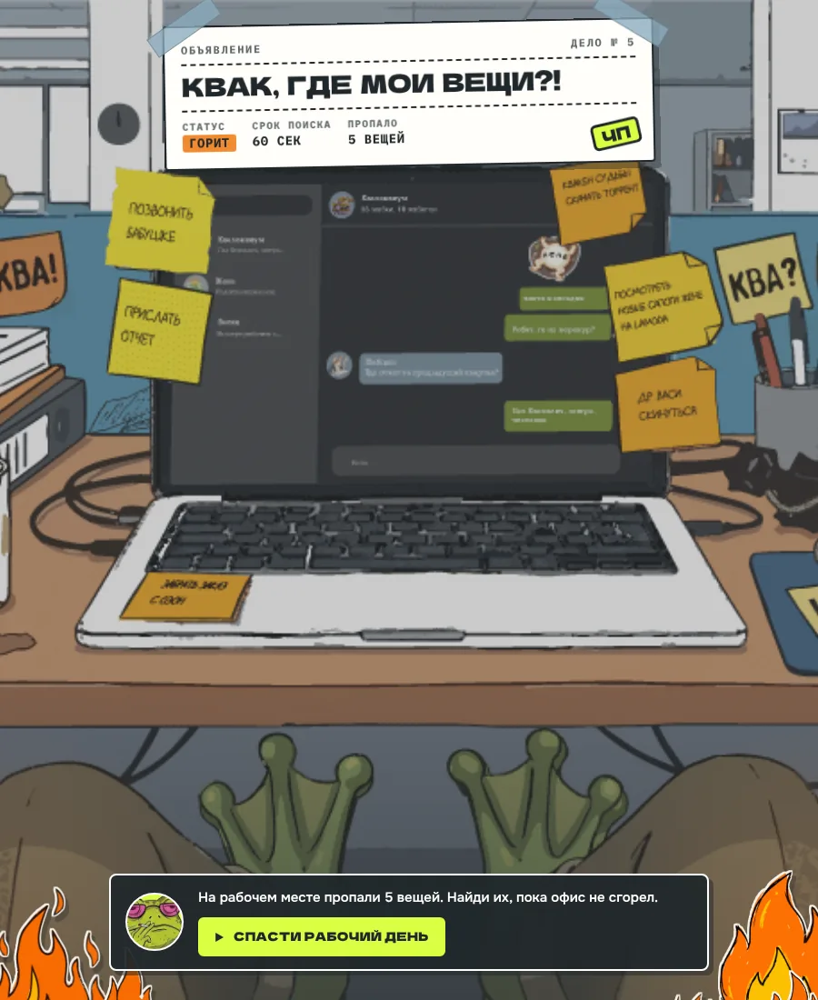
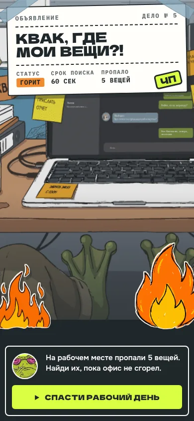
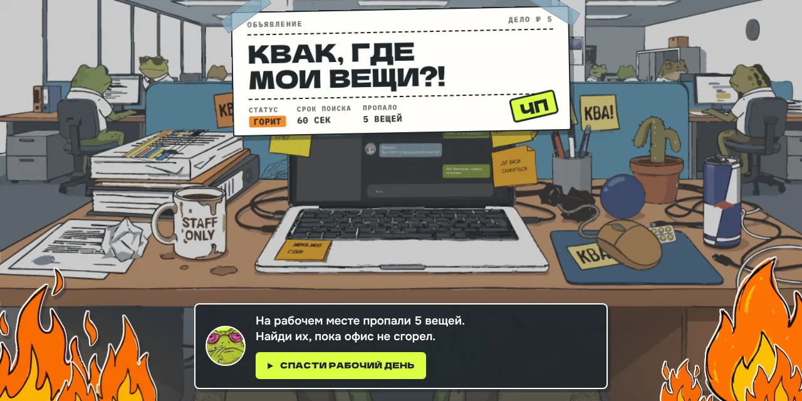

№ 003 · KVAK.EXE
Квак, где мои вещи?!
Браузерная hidden-object игра с концептом рекламных интеграций брендов
- Роль
- Концепция, иллюстрации, арт-дирекшн, UX/UI
- Тип
- Концепт
- Статус
- Завершён · играбельная версия
- Инструменты
- HTML · CSS · JavaScript · Иллюстрация
01 Контекст и цели
Концептуальный интерактивный спецпроект для портфолио. Формат — hidden object: игрок ищет предметы на одной насыщенной сцене.
Аудитория — уставшие от офиса клерки, поэтому тон сознательно безумный: жабы за компьютерами, стикеры «КВА!» и офис, который горит в реальном времени.
Игра задумана как рекламный формат: пять предметов — пять возможных партнёров (Aviasales, Кинопоиск, Т-Банк, «Вкусно — и точка», «Ясно»). Бренды в проекте не участвуют, все промокоды и награды демонстрационные — это прямо написано в игре.
02 Задача
Игра должна объяснять себя за секунды: правила умещаются в одну фразу на обложке, а срочность считывается без инструкций.
03 Концепция и визуальный стиль
Обложка оформлена как объявление «Срочное дело № 005»: название, статус «горит», срок поиска и число пропавших вещей — вся вводная на одном листке со скотчем.
Квак выглядывает из-за объявления, моргает и прячется, а под столом почёсывает лапой — персонаж живёт, пока игрок читает правила.
Цвет
- Бумага#F5F1E8 · фон
- Графит#20272B · текст, обводки
- Лайм#D9FF43 · действия и прогресс
- Оранжевый#F28B32 · огонь и срочность
- Сталь#8AABBE · второстепенный
- Белый#FFFFFF · карточки
Шрифты
- Sochinyalaзаголовки
- Onestтекст, интерфейс и все цифры
- IBM Plex Monoметки, чек, коды
04 Ключевые UX/UI-решения
Правила одной строкой
Вводная на обложке: «На рабочем месте пропали 5 вещей. Найди их, пока офис не сгорел» — и одна кнопка «Спасти рабочий день».
Цвет = смысл
Лайм только для действий и прогресса, оранжевый — только для огня и срочности. Этот код игрок усваивает за первые секунды.
Находка = интеграция
Каждый найденный предмет открывает карточку бренда в его стилистике: шутка про Квака, его реплика и условная награда — промокод, пробный период или бонус. Реклама встроена в сюжет, а не прерывает игру.
Список Квака
Справа — чек-лист с иконками предметов: найденное подсвечивается лаймом и зачёркивается, так что прогресс читается без счётчика.
Финал-сертификат
«Квак выжил. Дедлайн тоже.» — сертификат с временем, числом находок и промахов: результатом хочется поделиться.
Огонь вместо таймера
Огонь растёт по трём стадиям вместе с игровым временем и останавливается вместе с игрой — время видно периферийным зрением.
Отдельная композиция под каждый экран
У обложки свои раскладки для десктопа, планшета и телефона: объявление и кнопка всегда остаются в первом экране.
05 Экраны, макеты и адаптив














06 Реализация
- Чистые HTML, CSS и JavaScript без сборщика — проект открывается двойным кликом по index.html.
- Персонаж оживлён CSS-анимациями: моргание и почёсывание лапой со случайной паузой 10–20 секунд.
- У каждого языка огня свой период, амплитуда и дрейф, поэтому пламя не выглядит зацикленным.
- Шрифты подключены локально, без внешних запросов; лучший результат сохраняется в localStorage.